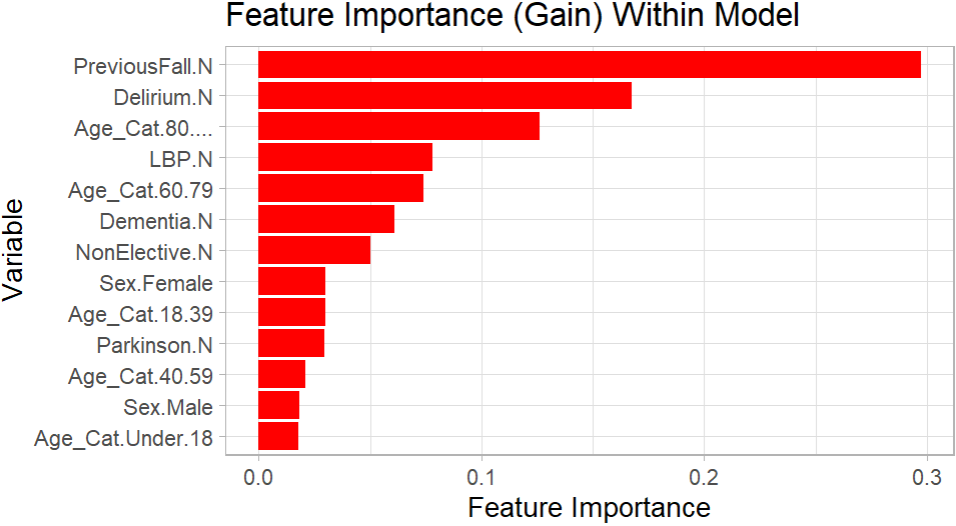
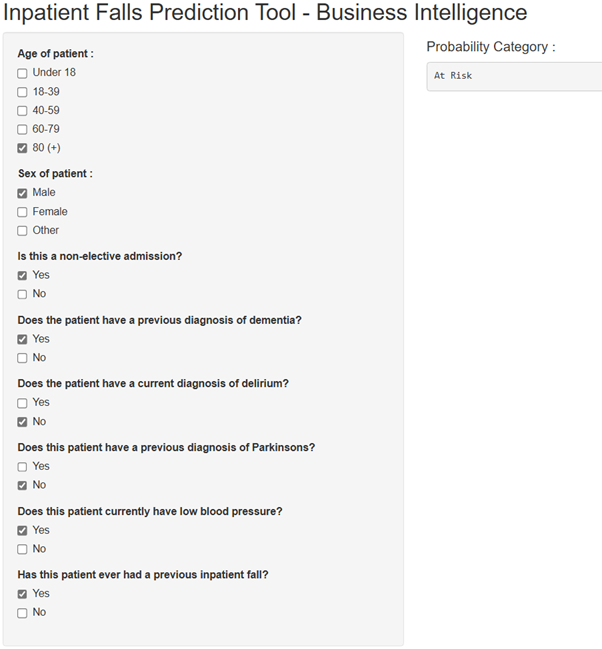

#LOAD LIBRARIES
library(tidyverse)
library(xgboost)
library(caret)
#SET SEED SO THAT RESULTS ARE REPRODUCIBLE
set.seed(200)
#IMPORT DATA
Results <- read.csv("CSV File", header=T, stringsAsFactors=T)
#CHECK INITIAL DATA
glimpse(Results)
#ENCODE DATA
dmy <- dummyVars(" ~ .", data = Results)
encoded_data <- data.frame(predict(dmy, newdata = Results))
encoded_data$Fall.Y <- as.factor(encoded_data$Fall.Y)
formatted_data <- subset(encoded_data, select = -c(Fall.N))
#CHECK FORMATTED DATA
glimpse(formatted_data)
#DATA SPLIT INTO TRAINING (70%) AND TESTING (30%)
parts = createDataPartition(formatted_data$Fall.Y, p = 0.7, list = F)
train = formatted_data[parts, ]
test = formatted_data[-parts, ]
#PREDICTOR AND RESPONSE - TRAINING
train_x = data.matrix(train[, -21])
train_y = data.matrix(train[,21])
#PREDICTOR AND RESPONSE - TESTING
test_x = data.matrix(test[, -21])
test_y = data.matrix(test[, 21])
#FINAL TRAINING AND TESTING
xgb_train = xgb.DMatrix(data = train_x, label = train_y)
xgb_test = xgb.DMatrix(data = test_x, label = test_y)
#SAMPLE MODEL
#X WOULD BE THE MAXIMUM DEPTH
#Y WOULD BE THE NUMBER OF ROUNDS
depth <- x
rounds <- y
final = xgboost(data = xgb_train, max.depth = depth, nrounds = rounds, verbose = 0, objective='binary:logistic')
#MAKE FINAL PREDICTIONS ON TEST DATA
pred_test = predict(final, xgb_test)
#ASSESS ACCURACY
#T WOULD BE THE IDEAL THRESHOLD FOR CLASSIFICATION, DETERMINED AFTER TESTING
threshold <- t
a = as.factor(test_y)
b = as.factor(if_else(pred_test >= threshold, 1, 0))
CONFUSION_MATRIX <- table(Test_Value = a, Prediction_Value = b)
CONFUSION_MATRIXIntroduction
Hi! This blog post acts as a follow up to my previous entry to the NHS-R Community website, regarding the use of random forest models to predict a patient’s length of stay. This time, the aim was to classify a patient as either “at risk” or “not at risk” of falling as an inpatient, utilising the XG Boost technology available within R. The classification depended on a variety of predictor variables, agreed with a senior digital nursing colleague working within the same acute trust as me. The intention behind this project was to see how accurately a patient could be classified into a fall risk category, using the agreed predictor variables. The goals and proposed methodology of this project were established after discussions with the previously mentioned senior digital nursing colleague, in which we set out to determine what the most appropriate way to approach this task would be regarding a clinical perspective, variable selection and potential clinical use cases. The accuracy of the eventually completed model was assessed through predictions on a testing data set, where the model was used to classify patients as either at risk of falling or not. This prediction was then compared with the actual fact of whether each specific patient did experience a fall during their inpatient spell or not. The testing data set for this accuracy assessment was a section of the primary data set used for this project, as the primary data set was split into both a training and testing section.
As mentioned within my previous predictive analytics post (linked above), this blog post is not intended to be a comprehensive guide on how to approach a machine learning task within R, best practice for utilising XG Boost or a complete overview of all of the relevant considerations necessary for such a project. This blog post is intended to act as an overview of how I approached this specific project, that hopefully potential readers might find interesting. The considerations and methods discussed within this blog post are specific to the context of this project only. If you are thinking about undertaking a similar machine learning project, you should seek the relevant guidance to do so.
Data Set Preparation and Variable Selection
For this project, the variables used were discussed with the previously mentioned senior digital nursing colleague prior to the development and testing of the model. The features were chosen as it was thought that they would act as ideal predictor variables for whether or not an inpatient may experience a fall. The final predictor variables used in the model were as follows, “Sex”, “Non-Elective Stay”, “Dementia Diagnosis”, “Current Delirium”, “Parkinson’s Diagnosis”, “Current Low Blood Pressure”, “Previous Fall Flag” and “Age Category”. A positive to using these particular variables was that they were all readily available in internal electronic patient record systems.
While these predictor variables were the final ones utilised within this model, they were not the only ones considered from the start of the project. This is discussed in more detail later, within the section “Performance and Challenges”.
In order to transform and clean this data into an appropriate format, a SQL query was used to retrieve all of the relevant fields from the necessary electronic patient record systems and wrangle this into the data set that would eventually be used in the project. Next, this data was saved as a CSV file and used to train the model within the primary R script.
As the input for this specific model needed to be numeric, “one hot encoding” was once again used to create a numeric column for each value within the categorical variables. This encoding was performed within the R script itself.
Model Creation
This model was created in R using the following packages, “tidyverse”, “xgboost” and “caret”. The primary data set was initially imported into R as a CSV, this file is referred to in the example script below as “CSV File”. The data was then encoded using the function “dummyVars”, with any irrelevant columns then removed. For this project, the data was split into a training section containing 70% of the initial data and a testing section containing 30% of the initial data.
Following this, the optimal number of rounds and the maximum depth of the model were established. This was done through gradual adjustments to each of these values, with improvements and drops in performance and prediction quality noted. In the example script provided below, “x” would be replaced by the depth and “y” would be replaced by the number of rounds. Once the model was trained, the accuracy and recall was then assessed through a confusion matrix. As this was a heavily imbalanced data set, where a much larger proportion of patients did not experience a fall compared to those that did, the threshold for classification needed to be altered from the default value in order to receive meaningful and useful predictions. Within the example script, “t” would be replaced by the specific threshold value determined to be optimal for classification. For this project, the threshold was eventually decided through a process of gradual alterations, with improvements and drops within the accuracy and recall scores of the model noted.
As mentioned within my previous predictive analytics post, I established a seed within the R script using the set.seed() function, in order to ensure that the results were reproducible.
The example script showing how this project was approached within R is shown below.
Performance and Challenges
As the data set behind this model was quite heavily imbalanced, one of the solutions used to attempt to overcome this was to manually alter the balance of the training section of the data set through “oversampling” and “undersampling”. While this did result in reasonably high accuracy scores, it is believed that an unintended consequence of this was that “overfitting” took place. This conclusion was reached as predictions in testing were not generally in line with what was expected, despite the reasonably high accuracy scores. Due to this, the original data set balance was used, with a lowered threshold for classification (as previously mentioned). One of the key variables believed to have contributed to the overfitting issue was age, when used in a continuous, numeric format. Performance was generally better when age was altered to present as a categorical field, for example, 0-18 rather than a specific numeric value. While the issue of overfitting seemed to be a lot less prevalent by the end of the project, as predictions were more consistent with what would be expected, it is important to note that this does not mean there was absolutely no overfitting present within the model still.
As previously mentioned, certain variables originally considered were eventually removed from the data set and not included within the final version of the model. This is because they were determined to generally not be good predictor variables within the context of this specific data set and model. They may have actually been hindering the overall performance of the model. The variables removed were “Current Dizziness”, “Current Elevated Heart Rate”, “Current Visual Impairment” and “Current Incontinence”. While these variables were determined to not be good predictors within this particular project, they could still potentially be useful within another setting and context for the same purpose of predicting fall risk.
For the variables utilised within the final model, a chart is shown below visualising the feature importance of all those still included. The plot was created using the package “ggplot2”. The R script for this plot is also shown below, the script presumes that the model has already been created, as the model “final” from the previous script shown is referenced.
#LOAD LIBRARIES
library(ggplot2)
#FEATURE IMPORTANCE
model_feature_importance <- xgb.importance(model = final)
model_feature_importance <- model_feature_importance %>% arrange(desc(Gain))
#FEATURE IMPORTANT PLOT - GGPLOT2
ggplot(model_feature_importance, aes(x = reorder(Feature, Gain), y = Gain)) +
geom_bar(stat = "identity", fill = "red") +
coord_flip() +
labs(title = "Feature Importance (Gain) Within Model", x = "Variable", y = "Feature Importance") +
theme_light()Plot Of Feature Importance

The performance of the XG Boost model was compared with a Logistic Regression model and a Random Forest model, both also created in R using the same data set. Overall, the XG Boost model seemingly returned a better accuracy and gave higher quality predictions with this specific data set than either of the other classification methods.
As an inpatient fall could be considered to be rather awkward to predict, in that multiple patients that did not fall could theoretically be admitted with the exact same values as a patient that did fall, a goal of achieving an overall accuracy and recall score of 70% was set for this specific project. Precision, while very important for some projects, was not deemed to be a priority over recall and overall accuracy for this specific project. This is because the impact of a false positive (being a patient predicted to fall that did not actually fall) would be more acceptable in the context of this project than a false negative (being a patient that did fall but was predicted not to). The final accuracy score for this project was 69.39%, while the recall score was 67.83%.
Interactivity For Users
Similarly to the previously mentioned Random Forest prediction project, it was thought that users would need a way to simply interact with the model to input values and receive their predictions. For this, I created a shiny app that would allow users to utilise check boxes to input the various predictor values for a hypothetical patient. The app would then produce a fall risk classification based on these predictor values using the model. In theory, this app would be hosted and accessed internally within a trust, for relevant staff to use for predictions. Below, a screenshot is shown of an example of the final output of the app based on the predictor values entered. In this case, the model predicted that the patient would be a fall risk.
Screenshot Of App

Considerations and Notes
. If such a model were to ever be used for clinical purposes, it would require further validation to absolutely ensure that the performance was to a high standard and that predictions were meaningful. As previously mentioned, there may have still been overfitting present within the final version of this model, even if this was to a lesser extent than it would have otherwise been if the relevant corrections and amendments had not been made.
. While I opted to use an XG Boost model created specifically within R for this project, it should be noted that alternative classification methods and other tech stacks could have also been used to develop a similar model.
. When utilising patient data for such a model, there are obvious information governance considerations necessary. The data set used to create this model was limited to only variables that were utilised for predictions, no unnecessary information was extracted. Additionally, this data was wrangled, stored and analysed on the trust’s internal network only.
. My role within my organisation is not explicitly that of a “Data Scientist” or primarily a machine learning focused role, my current title is “Information Development Analyst”. While I have a keen interest in R, machine learning and the potential applications of this within the NHS, I am definitely not an authority in this area of healthcare analytics. The methods used for this undertaking are specific to the goals and context of this project only. If you are considering creating something similar within your own organisation, you should seek the relevant guidance to do so.
. Once the age variable had been altered to present in a categorical format, rather than as a continuous numeric value, it may have been more appropriate to utilise “ordinal encoding” rather than “one hot encoding” for this specific variable. However, a version of the model was created with this applied as an alternative and this did not appear to impact the performance of the model. Nevertheless, I plan to eventually create a second version of the model with this considered, along with more recent data included, as the time period for admissions within the data set used for this project was the 1st January 2021 - 31st December 2024.
. Throughout this blog post, I have continually referred to a senior digital nursing colleague who had valuable input into this project from a clinical perspective, particularly for considering potential clinical use cases and initial variable selection. Thanks Hannah for your contribution to this project!
Final Thoughts
Thank you for taking the time to read this post! I hope you have found it as interesting as I found undertaking the project itself.
There are certainly untapped applications for prediction models, similar to the one described in this post, to be created and implemented throughout the NHS and healthcare analytics more generally for a variety of clinical and non-clinical use cases. Some organisations may already have large amounts of resources dedicated to the development and implementation of internal prediction models, while others may not have started to explore the possibilities and potential benefits of this yet. Each organisation looking to implement predictive analytics would likely benefit in unique ways, depending on where attention and resources were focused. Wherever these models are implemented, it is obviously imperative that they are done so with care and extensively checked before they are allowed to influence any potential decisions within a healthcare organisation. As this technology has become more accessible through open source tech stacks (such as R and Python) and more digestible through the increased availability of online resources, I am personally excited to see any further developments, particularly within the NHS and wider healthcare space.